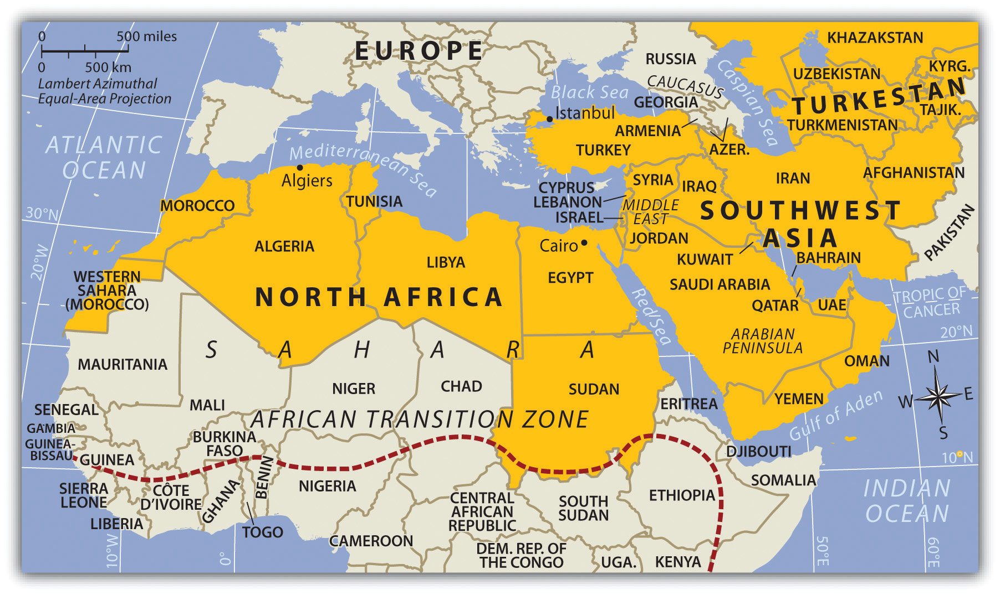

The realm of North Africa and Southwest Asia is large and expansive in terms of physical area, but its regions share a number of common qualities. The physical area of this realm is divided into three regions: North Africa, Southwest Asia, and the countries of TurkestanAlternative term for the region of Central Asia named after the Turkish people who moved through the area centuries ago. (the geographic region of Central Asia). The countries in the North African region include the countries bordering the Mediterranean Sea and the Red Sea from Morocco to Sudan. The realm borders the Atlantic Ocean, the Sahara Desert, and the African Transition Zone. Egypt has territory in both Africa and Asia through its possession of the Sinai Peninsula. The second region, Southwest Asia, includes Turkey, Iran, the Middle East, and the Arabian Peninsula. The land on the eastern shores of the Mediterranean Sea is frequently referred to as the LevantLand area bordering the eastern Mediterranean Sea that now includes Israel, Lebanon, and parts of western Syria. and is often included as a part of the Middle East. Technically, the term Middle East only includes the five countries of Israel, Lebanon, Jordan, Syria, and Iraq, but in common practice Middle East refers to all of Southwest Asia. Central Asia, also referred to as Turkestan, includes the “stan” countries from Kazakhstan to Afghanistan in the region between China and the Caspian Sea. The suffix stan, meaning “land of,” is a common suffix for country names in Central Asia. Afghanistan is the only country of Central Asia that was not officially a part of the former Soviet Union.
The Middle East—a European term that bridges the Near EastRegion of present-day Turkey. and the Far EastGeneral European term for the regions of Asia including India and China.—can also be defined as the area between the Mediterranean Sea and the Persian Gulf. Turkey, with its focal point of Istanbul, has been considered part of the Near East by Europeans. The famous Agatha Christie novel Murder on the Orient Express was about a train that traveled between Paris and Istanbul. The word orient refers to the east; occident refers to the west. Because Turkey was referred to as the Near East and India and China were the Far East, the region in between became the Middle East. This term is not entirely accurate but is widely used to refer to Southwest Asia.
Three small countries in the Caucasus Mountains—Georgia, Azerbaijan, and Armenia—are affiliated with this realm through their geographic location and their histories. They are technically European countries and were once part of the former Soviet Union. The details of these countries are covered in Chapter 1 "Introduction to the World". Turkey, which has territory in both Europe and Asia, was historically referred to as Asia MinorThe ancient region that is present-day Turkey. because most of its land mass is in Asia. The portion of Turkey that lies to the west of Istanbul is on the European continent, which connects Turkey with the European community. Cyprus is a small island in the eastern Mediterranean that has ties to Turkey and a historical connection to the Middle East. Cyprus is technically a European country and is a member of the European Union. Bordering both Iran and China is Afghanistan, which has been a transitional country in the pages of history. Many empires have conquered it, and many groups have fought over its territory. Today, Afghanistan is a key country in the globalization process because of its huge mineral reserves, yet it has a volatile and unstable political scene.
Sudan, a country geographically located in Africa, is included in this realm because it shares similar traits with the rest of the realm’s three regions. Sudan could also be studied with East Africa. The African Transition Zone cuts across Sudan and extends through the widest part of the African continent. The African Transition Zone creates a boundary for the realms of North Africa and Southwest Asia dividing the Islamic influence to the north from the Christian influence to the south. It is also a transitional boundary between the dry and arid type B climates and the more tropical type A climates of Equatorial Africa. The countries on the eastern end of the African Transition Zone—including Eritrea, Somalia, and Ethiopia—are often covered with this realm in other contexts, but in this textbook, the critical information was included in the section on East Africa (Chapter 7 "Subsaharan Africa", Section 7.5 "East Africa"). The African Transition Zone can be volatile, with the potential for ethnic, cultural, or political conflicts.
Figure 8.1 The Regions of North Africa, Southwest Asia, and Turkestan
The African Transition Zone is the southern boundary of the realm.
Source: Map courtesy of University of Texas Libraries, http://www.lib.utexas.edu/maps/world_maps/world_pol_2011.pdf.